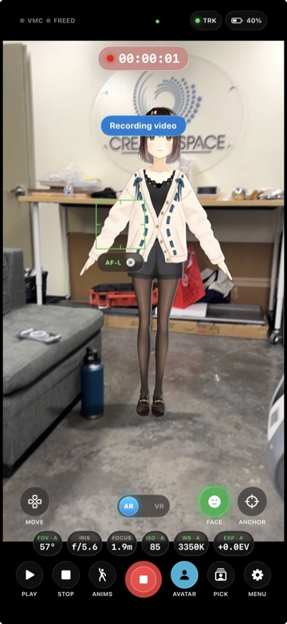

VTOKU Cam records the composited AR view, your real scene with the avatar in it, to a video file with audio, captured straight off the render pass for clean results. Recording is one of the app's output modes, alongside NDI, live streaming, and HDMI monitoring; choose it under Settings › Output.
Record a take

- Grant the Microphone (for audio) and Add to Photos permissions when prompted.
- Frame your shot and tap Record.
- Tap again to stop. The take is encoded to HEVC and saved to your Photos library.
On devices with Camera Control, you can press it to start and stop recording without reaching for the on-screen button. Recording resolution (up to native), frame rate (24 to 60 fps), and the microphone are set under Settings › Output.
Orientation lock
When a take starts, the interface orientation locks for the whole recording, so rotating the device mid-take can't flip or stall the video. Set your orientation before you hit record.
Tips for clean takes
- Good, even lighting helps both ARKit tracking and the avatar's live lighting.
- Set your lens / FOV and your look (depth of field, Screen FX) before recording for a consistent take.
- For external recording or live switching instead of (or alongside) on-device capture, send your feed over NDI.
Where takes are stored
Finished recordings live in your own Photos library, under your control. VTOKU never receives them (see the Privacy Policy).
Next: Bonded live streaming →